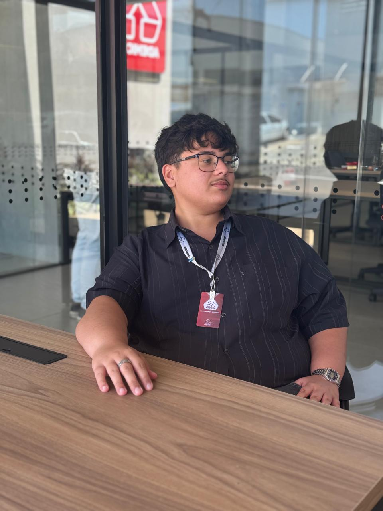
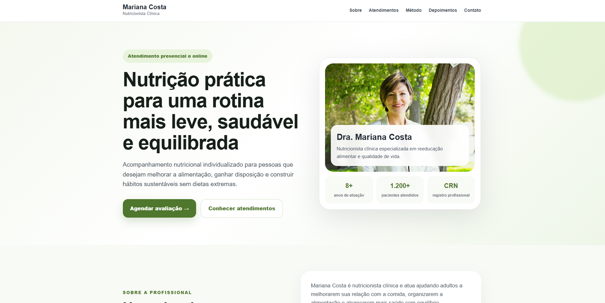
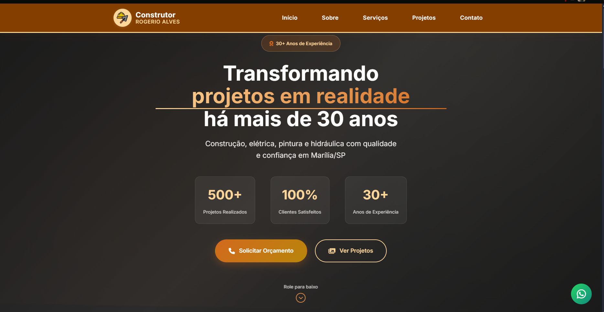
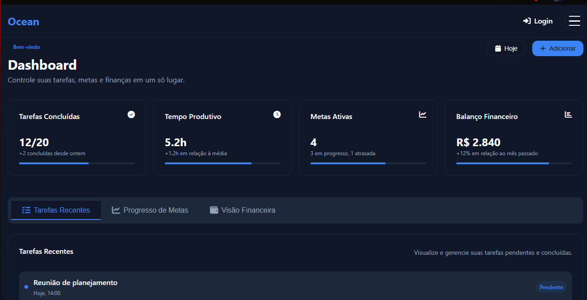
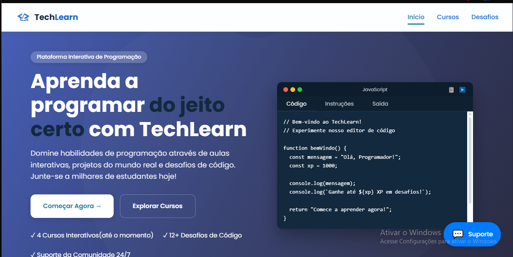
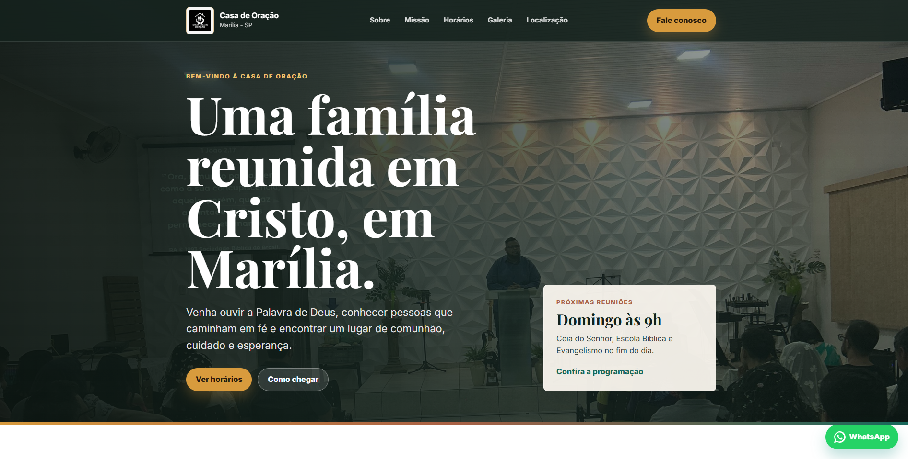

Sites institucionais
Desenvolvimento de sites profissionais, responsivos e estratégicos para empresas que precisam transmitir autoridade e gerar contatos.
Crio sites, landing pages, sistemas web e automações para empresas que precisam captar mais clientes, organizar processos e fortalecer sua presença digital com clareza e profissionalismo.

Escolho a tecnologia de acordo com o problema do negócio, priorizando páginas rápidas, interfaces simples e soluções que o cliente consiga usar no dia a dia.
Desenvolvimento de sites profissionais, responsivos e estratégicos para empresas que precisam transmitir autoridade e gerar contatos.
Páginas focadas em captação de leads, campanhas e ofertas específicas, com CTA claro e estrutura voltada para conversão.
Soluções sob medida para organizar informações, processos internos, cadastros, atendimentos e rotinas operacionais.
Integrações com WhatsApp, formulários e planilhas para reduzir tarefas manuais e acelerar o retorno para clientes.
Ajustes de layout, responsividade, performance, textos e chamadas de ação em sites que já estão no ar, mas precisam evoluir.
Painéis administrativos para visualizar dados, acompanhar atividades e centralizar informações importantes do negócio.
Exemplos de interfaces criadas para apresentar negócios, organizar informação e facilitar o contato entre empresas, clientes e usuários.

Problema: A profissional precisava apresentar seus serviços com mais clareza e facilitar o contato de novos pacientes.
Solução: Criei um site responsivo com seções de apresentação, serviços, método de atendimento, depoimentos e chamada direta para WhatsApp.
Resultado: A presença digital ficou mais profissional, com informações organizadas e um caminho simples para agendamento.

Problema: O prestador de serviços precisava de uma apresentação online confiável para mostrar sua atuação na construção civil.
Solução: Desenvolvi um site responsivo com serviços organizados, visual profissional e botão direto para atendimento.
Resultado: O negócio ganhou uma vitrine digital mais clara, adequada para consultas no celular e para encaminhar orçamentos.

Problema: Usuários precisavam centralizar tarefas, metas e finanças em uma interface simples para acompanhar sua rotina.
Solução: Construí um sistema web com foco em organização, navegação intuitiva e separação clara das principais áreas de controle.
Resultado: A solução oferece uma experiência mais prática para registrar, visualizar e acompanhar informações pessoais ou profissionais.

Problema: Iniciantes em programação precisavam de uma experiência de aprendizado mais guiada, visual e fácil de acompanhar.
Solução: Desenvolvemos uma plataforma com conteúdo organizado, navegação simples e proposta gamificada para apoiar o estudo.
Resultado: O projeto apresenta uma jornada de aprendizado mais clara, com interface amigável para estudantes no início da formação.
Problema: O conteúdo sobre cybersegurança precisava ser apresentado de forma mais envolvente e alinhada ao tema tecnológico.
Solução: Desenvolvi uma página interativa com terminal em JavaScript, blocos de conteúdo e experiência visual compatível com o assunto.
Resultado: A apresentação ficou mais dinâmica, com navegação imersiva e melhor organização das informações educacionais.

Problema: A comunidade precisava de uma presença online para apresentar sua mensagem, programação e formas de contato.
Solução: Criei um site responsivo com conteúdo institucional, visual acolhedor e informações organizadas para visitantes.
Resultado: A igreja passou a contar com um canal digital mais claro para ser encontrada e apresentar seu trabalho local.
Da primeira conversa à entrega, o objetivo é manter clareza sobre escopo, prioridade e resultado esperado para o cliente.
Entendo a necessidade do cliente, o público, o momento do negócio e o objetivo do projeto.
Defino a melhor solução, a estrutura das páginas, funcionalidades e prioridades de entrega.
Crio o site, sistema ou automação com foco em usabilidade, responsividade e desempenho.
Faço os ajustes finais, publico a solução e oriento o cliente sobre o uso e próximos passos.
Sou Felipe Alves, desenvolvedor full stack júnior em Marília/SP. Trabalho na criação de soluções digitais simples, funcionais e responsivas para ajudar empresas, prestadores de serviço e profissionais liberais a melhorar sua presença online e organizar processos.
As ferramentas mudam conforme o projeto, mas a prioridade é sempre entregar uma experiência rápida, responsiva e fácil de manter.
Explique o que sua empresa precisa melhorar: presença digital, captação de clientes, organização de processos ou uma solução específica.
Atendo empresas, prestadores de serviço, vendedores, corretores e profissionais liberais que precisam de soluções digitais objetivas e bem apresentadas.
Falar sobre meu projeto